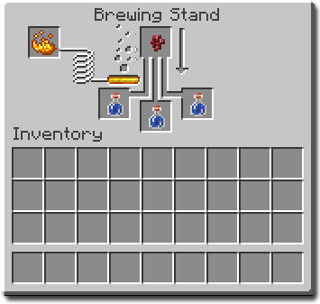

How to craft a potion of invisibility

This Minecraft tutorial explains how to craft a Potion of Invisibility with screenshots and step-by-step instructions.
In Minecraft, you can brew a Potion of Invisibility and add it to your inventory. When this potion is drank, it will give you the Invisibility effect so that no one can see you.
Supported Platforms
- Java
- Pocket edition
- Xbox
- Nintendo Switch
- Windows 10 Edition
- Education Edition
Required Materials
- Brewing stand
- 3 glass (or 1 glass bottle)
- 1 nether wart
- 3 blaze powder
- 1 golden carrot
- 1 spider eye
- 1 sugar
- 1 brown mushroom
Optional materials
- 1 redstone dust
- 1 Dragon's Breath
- 1 Gunpowder
Instructions
Now that you have all your ingredients, it is time to prepare your materials for brewing!!
Prepare materials
-
If you already have a water bottle, skip to step 3. Otherwise, use a crafting table and place 3 glass to create a glass bottle

- Right click any water source with glass bottle to fill it up
- Craft a fermented spider eye by placing a sugar, brown mushroom, and spider eye in any orientation

Brewing
- Open the Brewing Stand menu by right clicking on the brewing stand

- Add Blaze Powder by adding it to the far left box

- Actiavte bottle by placing the bottle(s) and netherwartin the designated spots

- Repeat steps 2 and 3 with the golden carrot, then the fermented spider eye

Tips and Tricks